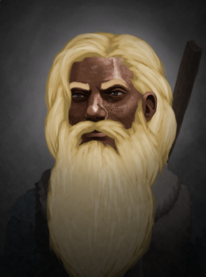
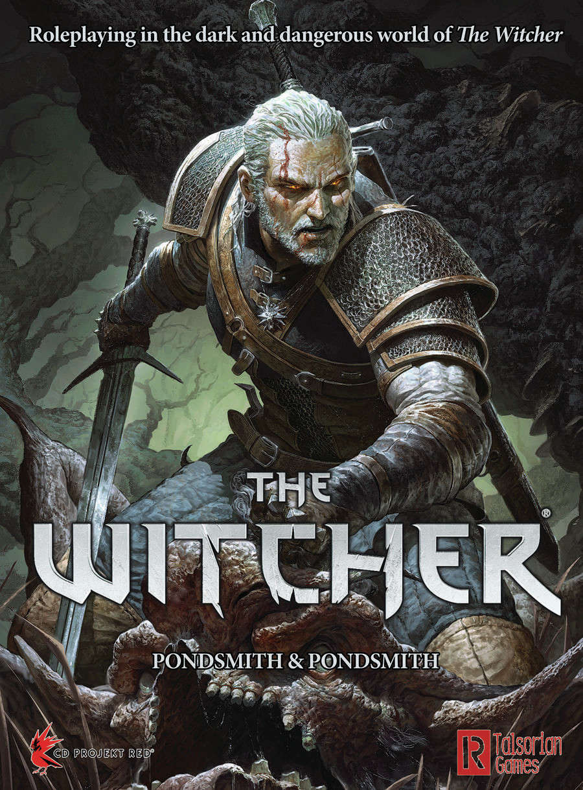

DND: Snorri Vetadeoro
Personaje para la partida de DnD de Pancho. Se trata de un enano hechicero fuertemente motivado por continuar las tradiciones de su clan y recuperar su vieja gloria tras ser prácticamente erradicado durante su niñez.

The witcher TRPG: Character generator
Character generator for The Witcher tabletop rpg. Still WIP.